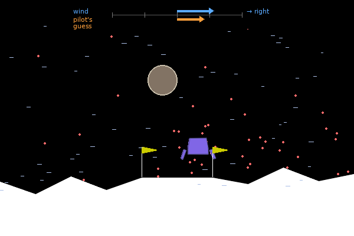

How it sees
The pilot never sees the wind, the seed or anything hidden inside the simulator. It gets 16 numbers per step:
the game's 8 standard observations and 8 sensors computed only from what it has observed so far and the actions it took.
A test (tests/test_core.py) re-computes every input from the observation history and checks the policy flies
identically when it is given nothing else.
| # | Input | What it is |
|---|---|---|
| 1–2 | x, y | position relative to the pad centre (x: 1 = 10 m; y: 1 = 6.7 m) |
| 3–4 | vx, vy | velocity |
| 5–6 | angle, angular velocity | tilt and how fast it turns |
| 7–8 | left leg, right leg | 1 when that leg touches the ground |
| 9 | drift | old wind sensor: the average change in vx on steps without side engines. Correlates only 0.14 with the true wind, because a tilted main engine pushes sideways too |
| 10 | |x| | distance from the pad's centre line |
| 11–13 | boulder dx, dy, r | where the boulder is relative to the lander, and its radius (it is visible on screen, so the pilot may know it) |
| 14 | waypoint dx | how far from the point beside the boulder it should aim for (then the pad) |
| 15 | above boulder | how far above the height it must keep while over the boulder |
| 16 | clean wind estimate | the change in vx minus the known push of the action it just took (measured in calm air). Correlates 0.97 with the true wind. This sensor lifted the hand-written pilot from 75% to 86% |
Seeing the wind in the replays
Every replay on this site draws the wind. The blue arrow is the true wind on this step, which the pilot never sees. The orange arrow is the pilot's clean wind estimate (input 16). The dust streaks drift with the true wind. When the two arrows agree, the pilot knows what is pushing it. In a test flight of the bake-off winner they correlated 0.94.

Why a sensor can matter more than a bigger network
The wind in this game is a smooth random gust (a sum of sine waves with a random phase per flight) plus turbulence. The pilot cannot see it, only its effect: a sideways acceleration. But its own side engines and a tilted main engine also cause sideways acceleration. If a sensor mixes those up, no network, however big, can tell "the wind pushes me left" from "I just fired my right engine". The clean wind estimate subtracts the action's own known push first. That is the kind of missing information the old project found mattered most.
A possible next step, if the failure analysis shows it: a small memory (a few stacked frames or a GRU), so the network can build its own estimates from the history.